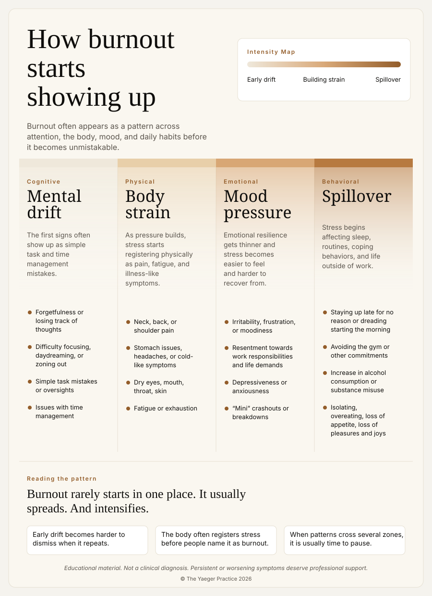

Partnership
Marriage & committed partnership
Getting ready to merge lives, a rocky first year, a quiet distance a decade in. The work is rarely about a single argument. It is about the shape of two lives built together.
Psychotherapy for adults in the middle of a real transition: a divorce, a career pivot, a move, a breakup, a new baby, a loss.
Getting ready to merge lives, a rocky first year, a quiet distance a decade in. The work is rarely about a single argument. It is about the shape of two lives built together.
Grief, anger, identity, co-parenting, logistics, decisions you did not plan to make. Therapy gives all of that a place to happen instead of bleeding across the rest of your life.
Burnout, a layoff, a promotion that feels wrong, a pivot you cannot quite name. I have sat on several sides of the career table and tend to be useful for professionals figuring out the next move.
A new city, a return, a move you had to make. Relocation is rarely just logistical. It touches community, identity, and who you get to be next.
A long relationship ending, a short one that hurt more than it should have, or the slow recognition that something was over a while ago. The work: process it, learn from it, get your attention back.
First baby, second baby, blended family. The identity shift is real, and so is the pressure on the partnership. Therapy is a place to name all of it out loud.
A person, a role, a version of your life you thought you were going to have. Grief does not move on a schedule. Therapy does not try to rush it.
Retirement, empty nest, a diagnosis, coming out, estrangement, a sudden financial shift. If it is reshaping your life, it matters.
If none of these fit and you are still in the middle of something that is reshaping your life, know that it is just as significant.
Many transitions people bring into therapy are preceded, accelerated, or complicated by burnout. This is what it tends to look like before it gets named.

Keep readingMood ·Book a Consultation
Keep readingMood ·Book a Consultation